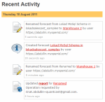
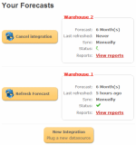

One of the keys to Lokad’s success is patience. Mastering statistics, enterprise software engineering and
cloud computing at their highest levels requires searching for the best people in their field, giving them time and
prioritizing quality over quantity. Only by committing for the long term, and through continuous innovation and improvement
we can be leading in what we do.
Highlights of the past year include the opening of our new development center in Ufa,
Russia which secures access to an outstanding pool of talent. Salescast has evolved, most
visibility in terms of user interface and product documentation. And with Shelfcheck
we have taken on the challenge of developing a solution to an unsolved problem: Out-of-Shelf in grocery retail.
Best regards,
Matthias Steinberg, CEO.
On-shelf availability has been challenging the software industry for decades, yet,
as far we can observe, there is no solution even close to being satisfying available
on the market at present day. For us, it represents a tough challenge that we are
willing to tackle.
Feature-wise, Shelfcheck is pre-alpha stage, hence, the actual feature set of
the v1.0 is still heavily subject to change. Yet, here is the overview:
- Real time OOS (out-of-shelf) alerts available through web and mobile access.
- Real time prioritization based on confidence in the alerts and financial impact of the OOS issues.
- OOS dashboard feeding the management with key on-shelf performance indicators.
The retail software industry is crippled by
consultingware where multi-million dollar solutions are sold that do not live up to
expectations once implemented. At Lokad we do not share this vision. The vision for Shelfcheck is similar
to Salescast, our safety stock optimizer. Shelfcheck will be:
- Plug & Play, with simple, documented ways of feeding sales data into Shelfcheck.
- Dead simple, no training required as Lokad manages all the OOS detection logic.
- Robotized, no human intervention required to operate the system.
- SaaS & cloud hosted, fitting any retailer from SMEs to the largest retail networks.
Priced as a monthly subscription, it will be strictly on demand and cost on average an approximate $100 per month
per store. Cost will be lower for minimarkets and higher for hypermarkets.
Our goal is to make Shelfcheck not only vastly affordable, but highly profitable for the retailer from day one.
Read the full announcement.

Last year, we announced Salescast,
as a radically simpler way to import data into Lokad in order to retrieve
sales forecasts, and to produce the corresponding inventory optimization metrics. We
believe to have succeeded in delivering a product that lives up to expectations
(see the BizLine case study below), yet this is not our
final word.
The documentation has been vastly extended from a
tiny 200 words to more than 40 pages. In particular, we have clarified the intended
usage for retail networks, eCommerce and manufacturers, and we have clarified the
reports produced
by Salescast.

Then, in August, we have pushed in production the first major user interface (UI)
revision (screenshots above and on the right). The new UI emphasizes teamwork
with the display of the recent activity within Salescast. We have also tried to bring
Salescast closer, as far design is concerned, to de facto standards such as
Facebook or Amazon. We hope that the resulting UI will be much more intuitive for
everyone.
BizLine is a private brand of Rexel Electrical Supplies, the worldwide leader in the distribution of electrical parts and
installation equipment with more than 2,300 sales outlets and 12 billion € in sales.
BizLine provides a range of high quality electrician’s fasteners & fixings,
tools and electrical accessories to small and medium size contractors through 640
branches in Europe and New Zealand.
Lokad improved the accuracy of our planning process significantly. The immediate
impact was a stock reduction of almost 1 million € at a monthly cost of 150€.
It was almost frightening to see our inventory levels getting so low! But what impressed
me most is the ease of implementation and use. The integration was painless, and now it
takes only a the click of a button and within 10 minutes I receive my forecast.
The time saving for me is significant.Thomas Brémont, Head of Supply Chain BizLine
We are very proud to have BizLine among our Salescast customers. BizLine is
importing the data directly from its ERP into Salescast. By doing this, BizLine eliminates
tedious and error prone processes that plague Excel-based forecasts.
Call volume forecasts is critical for call centers, being the basis for any
staffing optimization process. Three years ago, we were releasing the very first version
of our Lokad Call Center Calculator (L3C). Yet, like any desktop app, L3C was
requiring some extra efforts from the user to install and maintain yet another app.
In this day and age of cloud computing, it was feeling increasingly awkward.
Plus, this Windows-only setup was preventing Mac users from leveraging Lokad.
It was not acceptable.
So at the end of 2010, we started to develop the online successor of L3C named
Callcalc. Callcalc is now in production
since February 2011. It comes with a simple setup:
Call volume forecasts will land in your mailbox in a few minutes. Callcalc is build
on top of Windows Azure, and for those who are interested in cloud computing engineering,
it's another project build on top of Lokad.CQRS
- an open source set of patterns and practices to design enterprise apps on the cloud.
Weekly/Monthly aggregation is a lossy process -
Business is UP but forecasts are DOWN -
Fallacies in data cleaning for sales forecasts -
How bulk purchases impact safety stocks
|